Plataforma MITA
Multi-Intercultural-Transdisciplina Analógica
La Plataforma MITA es la herramienta oficial de gestión del conocimiento y buen gobierno del Estado de México. Integra bases de datos interdisciplinarias, análisis geoespacial, evaluación analógica, perfiles del Sistema Nacional de Investigadores (SNI), emisión de dictámenes de validación y una ventanilla ciudadana para reportes de la población en un flujo único orientado a procesos.
La plataforma cumple los requisitos funcionales RF-01 a RF-11 y organiza la atención institucional en siete pasos secuenciales:
Además, el portal Ventanilla Ciudadana permite a la población reportar problemáticas por eje temático (Salud, Educación, Empleo, Economía, Seguridad, Agua, Corrupción), recibir un número de control y dar seguimiento con ruta de atención y chat con el responsable asignado.
MITA-CIU-DEMO-00001. Contraseña de todos los usuarios demo: mita2026.
Al abrir la URL de la plataforma sin sesión activa, el sistema redirige a /login/.
En el entorno demo, cada tarjeta representa un rol del sistema; al pulsar Entrar como …
se inicia sesión automáticamente. Tras el login, la plataforma redirige a la pantalla inicial
correspondiente al rol (ventanilla ciudadana, nuevo expediente, bandeja, etc.).
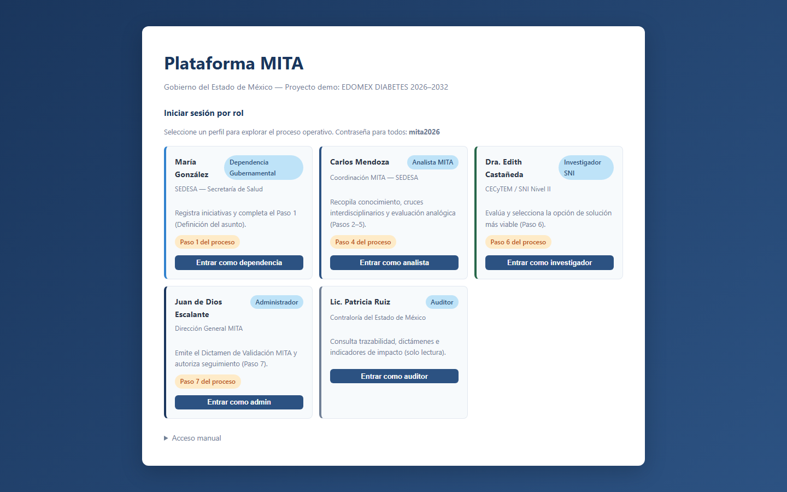
Si prefiere escribir las credenciales, despliegue la sección Acceso manual en la parte inferior de la pantalla de login, ingrese usuario y contraseña, y pulse Iniciar sesión.
Use el enlace Cerrar sesión en la barra superior o visite /logout/.
Cada usuario opera según su perfil. El menú lateral muestra solo las opciones permitidas para su rol; no es posible ver módulos institucionales y ventanilla ciudadana al mismo tiempo.
| Usuario | Rol | Responsabilidad principal | Pantalla inicial |
|---|---|---|---|
ciudadano |
Público general | Reportar problemáticas y dar seguimiento en ventanilla Edomex | /ciudadania/ |
dependencia |
Dependencia Gubernamental | Registra iniciativas y completa el Paso 1 | Nuevo expediente |
analista |
Analista MITA | Recopila conocimiento, cruces y evaluación (Pasos 2–5) | Bandeja / expediente demo paso 4 |
investigador |
Investigador SNI | Selecciona la opción de solución más viable (Paso 6) | Expediente demo paso 6 |
admin |
Administrador | Emite el Dictamen de Validación MITA (Paso 7) y administra el sistema | Expediente demo paso 7 |
auditor |
Auditor | Consulta trazabilidad e indicadores (solo lectura) | Expediente dictaminado |
| Sección del menú | Admin | Analista | Investig. | Dep. | Auditor | Ciudadano |
|---|---|---|---|---|---|---|
| Dashboard | ✓ | ✓ | ✓ | ✓ | ✓ | — |
| Bandeja de trabajo | ✓ | ✓ | ✓ | ✓ | — | — |
| Expedientes | ✓ | ✓ | ✓ | ✓ | ✓ | — |
| Registrar asunto | ✓ | — | — | ✓ | — | — |
| Base de Conocimiento / Mapa / Proyecto / Motor Analógico | ✓ | ✓ | — | — | — | — |
| Proceso / Metodología | ✓ | ✓ | ✓ | ✓ | — | — |
| Dictámenes / SNI / Reportes | ✓ | — | ✓ | — | ✓ | — |
| Administración Django | ✓ | — | — | — | — | — |
| Ventanilla Ciudadana / Registrar / Ruta gráfica | — | — | — | — | — | ✓ |
Tras iniciar sesión, la interfaz se divide en dos zonas: un menú lateral izquierdo (personalizado por rol) y un área principal con el contenido activo. La barra superior muestra el título de la página y, en expedientes institucionales, el folio y paso actual.
Existen dos portales independientes:
ciudadano) exclusivamente.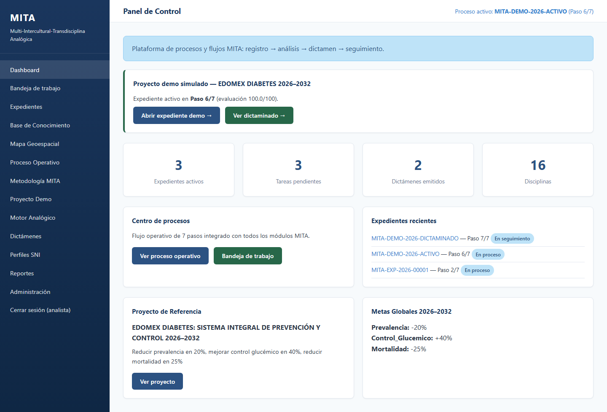
| Sección | Ruta | Función |
|---|---|---|
| Dashboard | / | Panel de control con estadísticas y accesos rápidos |
| Bandeja de trabajo | /bandeja/ | Tareas pendientes y expedientes asignados |
| Expedientes | /expedientes/ | Listado y detalle del workflow de 7 pasos |
| Registrar asunto | /expedientes/nuevo/ | Alta de nuevo expediente (Paso 1) |
| Base de Conocimiento | /base-datos/ | Disciplinas y fuentes validadas (RF-01) |
| Mapa Geoespacial | /mapa/ | Capas SIG y zonas de intervención (RF-07) |
| Proceso Operativo | /proceso/ | Vista kanban del flujo de 7 pasos |
| Metodología MITA | /metodologia/ | Marco conceptual y ejes de acción |
| Proyecto Demo | /proyecto/ | Proyecto de referencia EDOMEX DIABETES |
| Motor Analógico | /analogia/ | Evaluación analógica independiente (RF-06) |
| Dictámenes | /dictamenes/ | Consulta y emisión de dictámenes (RF-08) |
| Perfiles SNI | /sni/ | Investigadores recomendados por área (RF-02) |
| Reportes | /reportes/ | Indicadores de impacto (RF-11) |
| Administración | /admin/ | Panel Django (solo administrador) |
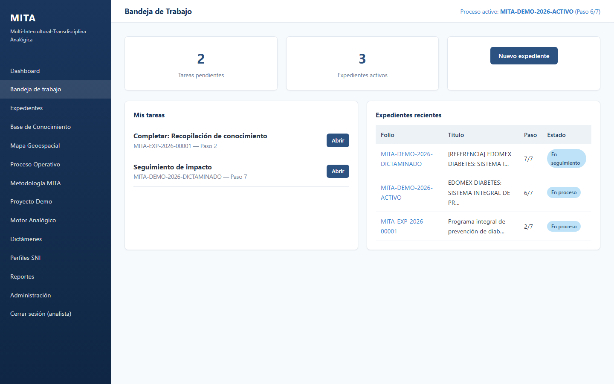
El corazón del portal institucional es el proceso operativo, visible en cada expediente mediante un stepper horizontal y en la vista kanban del menú Proceso Operativo. Cada paso vincula herramientas específicas y un rol responsable.
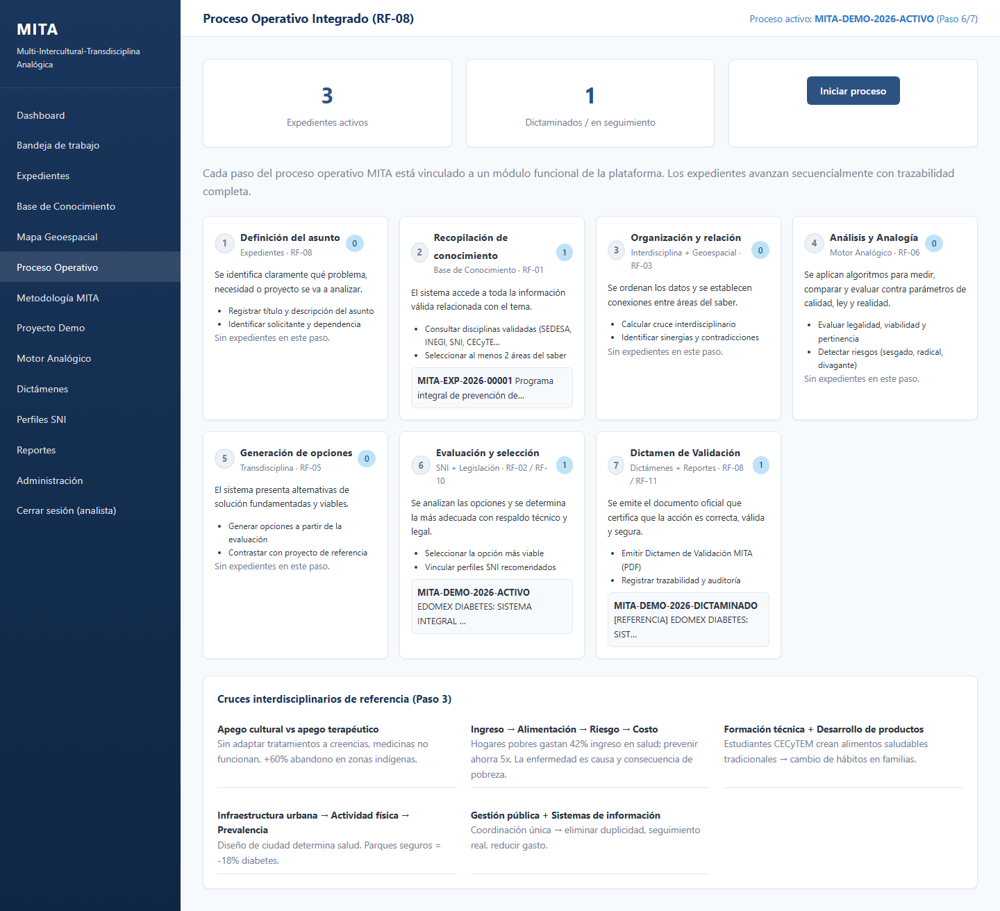
| Paso | Nombre | Rol | Módulo principal | Resultado |
|---|---|---|---|---|
| 1 | Definición del asunto | Dependencia | Expedientes | Folio MITA-EXP creado |
| 2 | Recopilación de conocimiento | Analista | Base de Conocimiento | Disciplinas vinculadas |
| 3 | Organización y relación | Analista | Mapa + Interculturalidad | Cruce interdisciplinario |
| 4 | Análisis y analogía | Analista | Motor Analógico | Puntuación analógica |
| 5 | Generación de opciones | Analista | Proyecto Demo | Alternativas de solución |
| 6 | Evaluación y selección | Investigador SNI | Perfiles SNI | Opción seleccionada |
| 7 | Dictamen de validación | Administrador | Dictámenes | PDF oficial + seguimiento |
Muestra todos los expedientes registrados con folio, título, paso actual y estado del flujo.
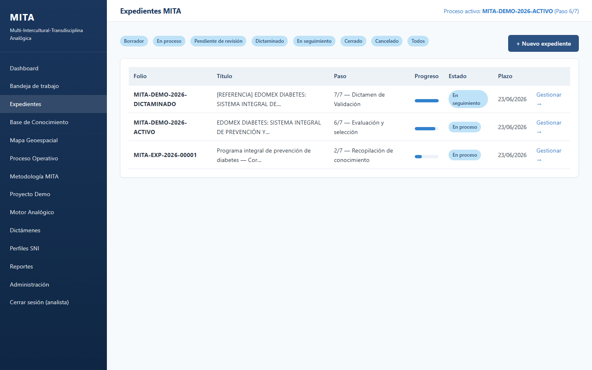
El rol Dependencia (o Administrador) registra una nueva iniciativa completando:
Al guardar, el sistema genera un folio único MITA-EXP-YYYY-NNNNN y establece un plazo de 30 días.
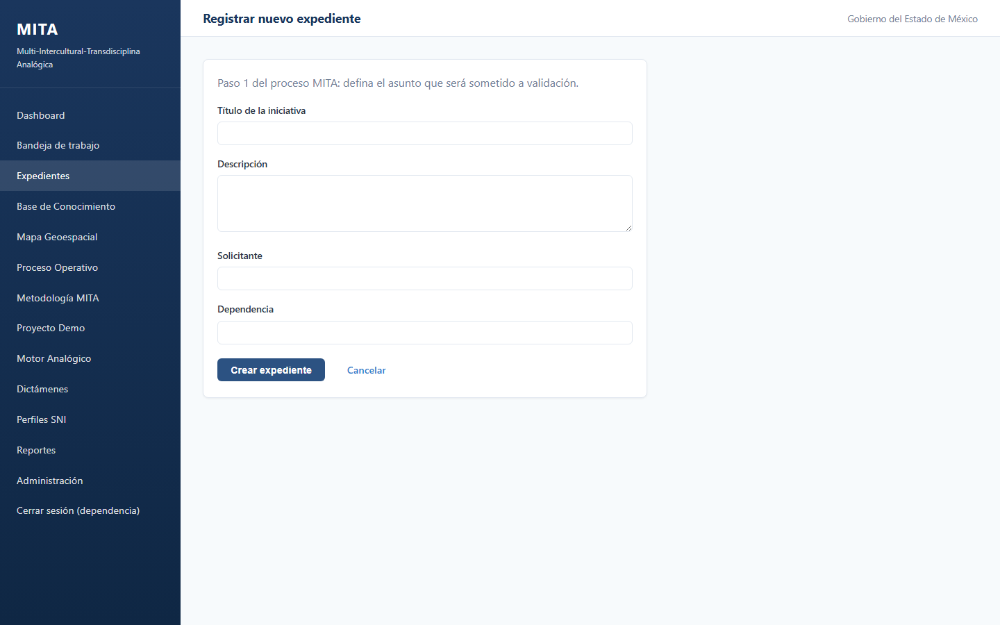
La pantalla de detalle concentra toda la operación del flujo: barra de progreso, stepper de 7 pasos, panel de herramientas del paso activo, formularios de captura y botones para guardar, avanzar o dictaminar.
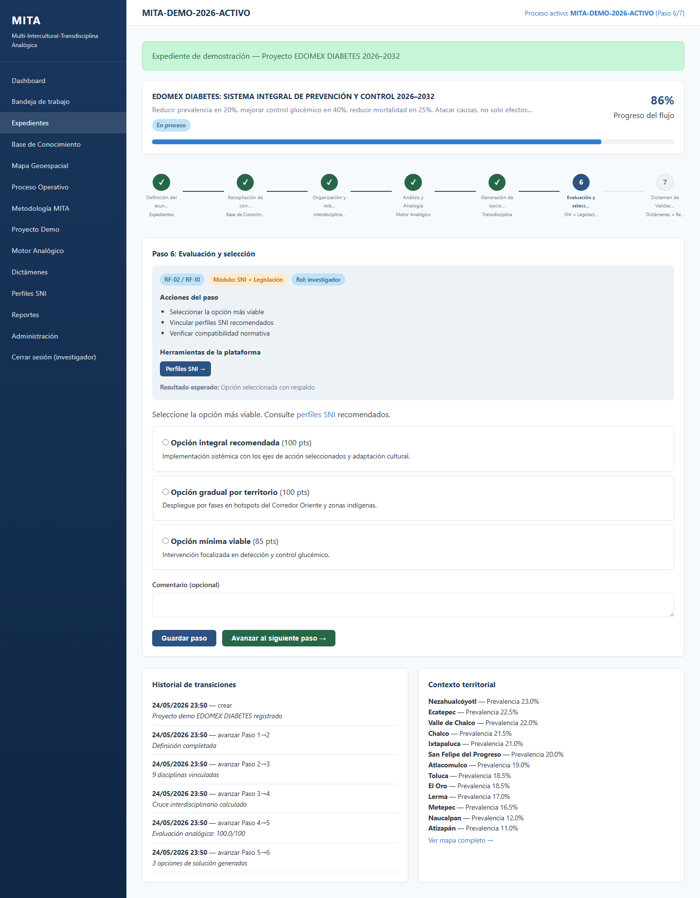
Al ingresar como auditor, el expediente dictaminado se abre en modo solo lectura. Aparece un aviso y los controles de edición quedan deshabilitados.
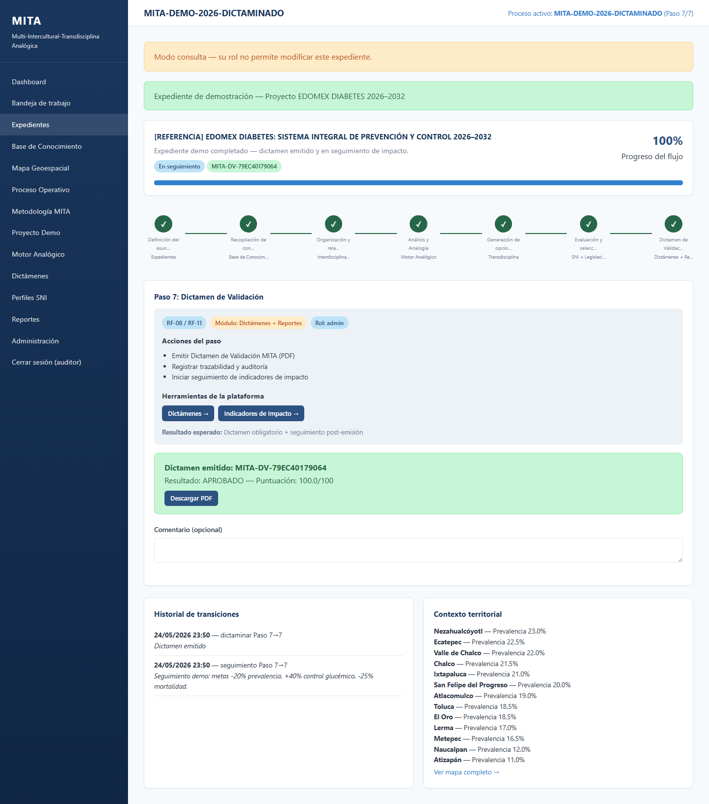
Consulta disciplinas validadas (SEDESA, INEGI, CECyTEM, SNI, etc.), su nivel de confiabilidad
y aportaciones clave. Desde el expediente, el enlace incluye parámetros ?expediente=X&paso=2
para mantener el contexto del flujo.
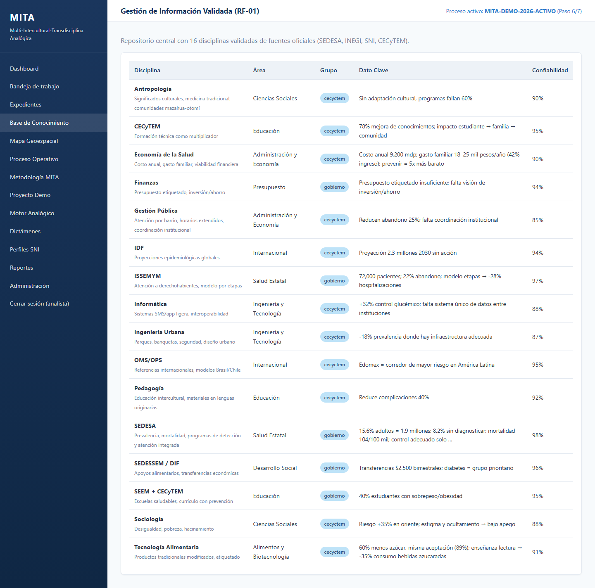
Visualiza zonas de intervención del Corredor Oriente y capas geográficas con prevalencia de diabetes. Permite contextualizar territorialmente la propuesta y seleccionar hotspots para el expediente.
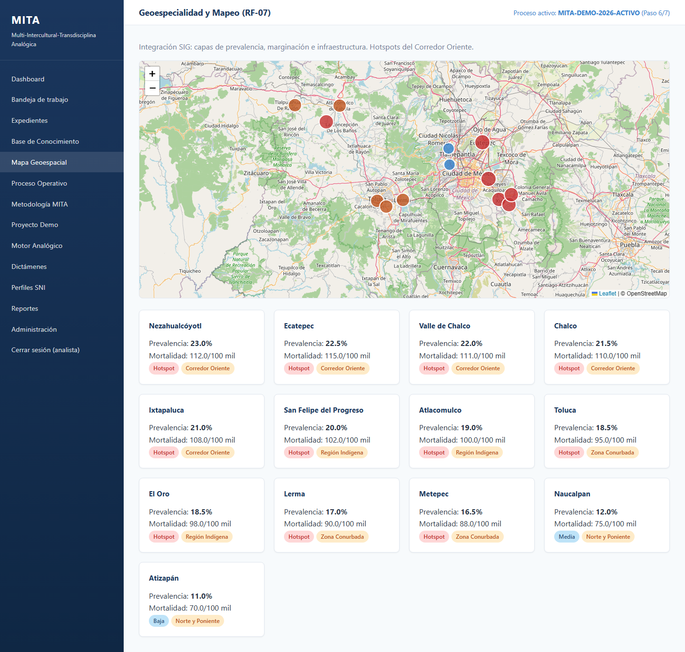
Describe los ejes de acción, el marco intercultural-transdisciplinario y los criterios de calidad que sustentan la evaluación analógica.
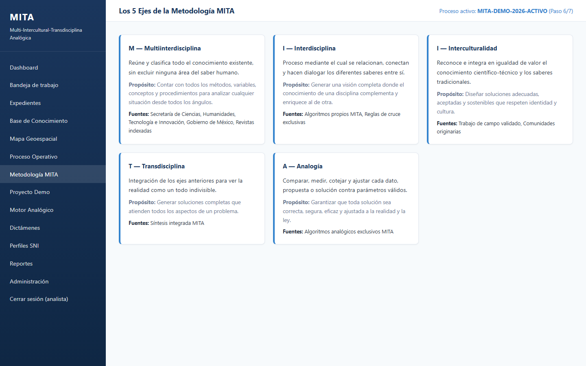
Presenta el proyecto EDOMEX DIABETES 2026–2032: objetivo, metas globales, ejes de acción y síntesis interdisciplinaria. Sirve como contraste para generar opciones de solución en el expediente.
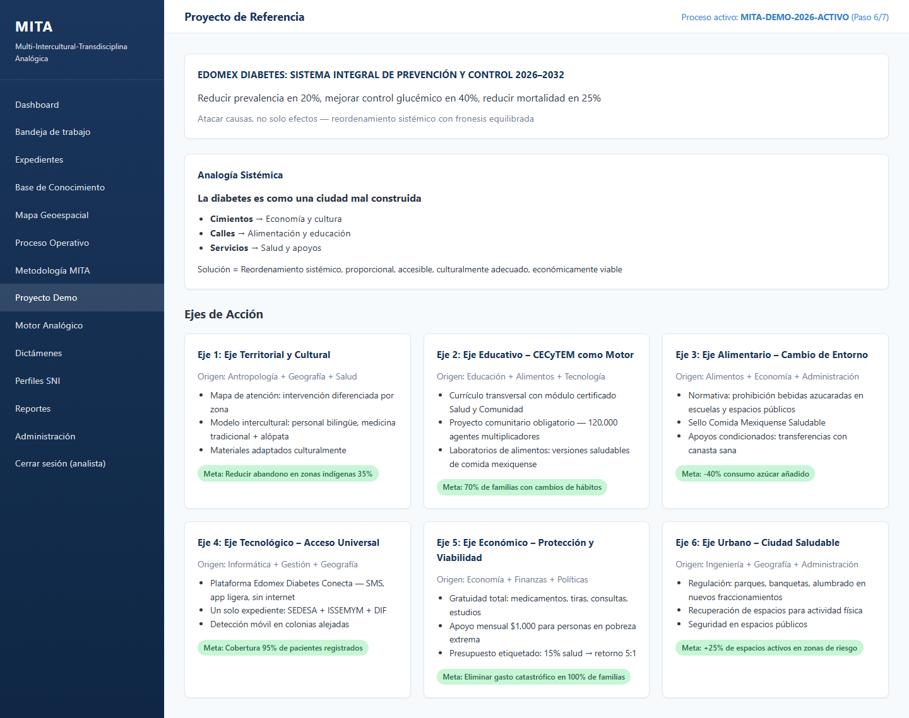
Módulo independiente en /analogia/ (accesible para Administrador y Analista).
Permite evaluar propuestas con los criterios analógicos A–F, visualizar riesgos sistémicos y generar
un dictamen en PDF sin necesidad de abrir un expediente, aunque también se utiliza integrado en el Paso 4.
analista desde el menú lateral.
Lista investigadores del Sistema Nacional de Investigadores recomendados por área del saber. En el Paso 6, el investigador selecciona la opción de solución más viable respaldada técnicamente.
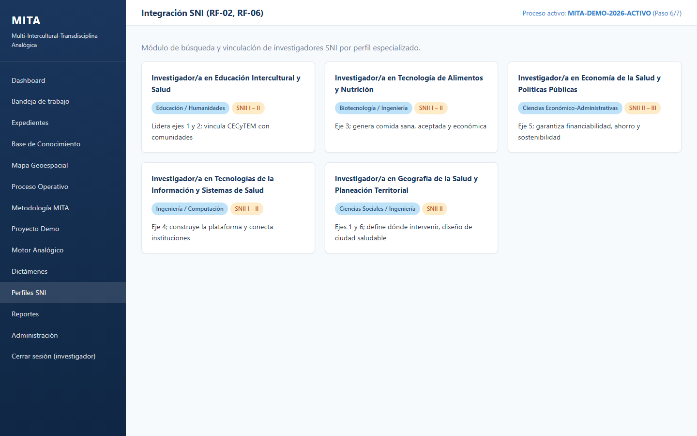
ciudadano / mita2026.
Solo verá tres opciones en el menú: Ventanilla, Registrar problemática y Ruta gráfica de atención.
En /ciudadania/ el ciudadano consulta sus reportes registrados, el estado de atención
y accede al detalle de cada uno. El entorno demo incluye el reporte precargado
MITA-CIU-DEMO-00001 (eje Salud — surtimiento de medicamentos).
En /ciudadania/nuevo/ siga estos pasos:
MITA-CIU-YYYY-NNNNN.
La sección /ciudadania/ruta-grafica/ muestra de forma visual el recorrido institucional
que sigue un reporte: recepción MITA, clasificación, turnado a dependencia, atención con responsable,
coordinación interinstitucional y respuesta oficial al ciudadano.
Al abrir un reporte (/ciudadania/reporte/<id>/) el ciudadano ve:
ciudadano para explorar el reporte demo MITA-CIU-DEMO-00001.
| Eje | Ejemplo de dependencias |
|---|---|
| Salud | SEDESA, IMSS-Bienestar, Coordinación MITA |
| Educación | SEIEM, CECyTEM, Coordinación MITA |
| Empleo | Secretaría del Trabajo, STPS, CECyTEM |
| Economía | Finanzas, Desarrollo Económico, DIF |
| Seguridad | Secretaría de Seguridad, FGJEM, C5 Edomex |
| Agua | CAEM, CONAGUA delegación, municipios |
| Corrupción | Contraloría, FGJEM, Secretaría de la Honestidad |
Expedientes precargados para practicar el flujo sin capturar datos reales:
| Folio | Estado | Uso recomendado |
|---|---|---|
MITA-DEMO-2026-ACTIVO |
Paso 6 — Evaluación SNI | Completar selección (investigador) y emitir dictamen (admin) |
MITA-DEMO-2026-DICTAMINADO |
Dictaminado y en seguimiento | Consulta de auditoría, reportes e indicadores |
/ciudadania/.MITA-CIU-DEMO-00001 y su ruta de atención.python manage.py seed_mita
El módulo de Dictámenes centraliza la emisión del documento oficial MITA (RF-08). Incluye folio, fecha, puntuación analógica, opción seleccionada y enlace de descarga en PDF. Accesible para administrador, investigador (consulta) y auditor (consulta).
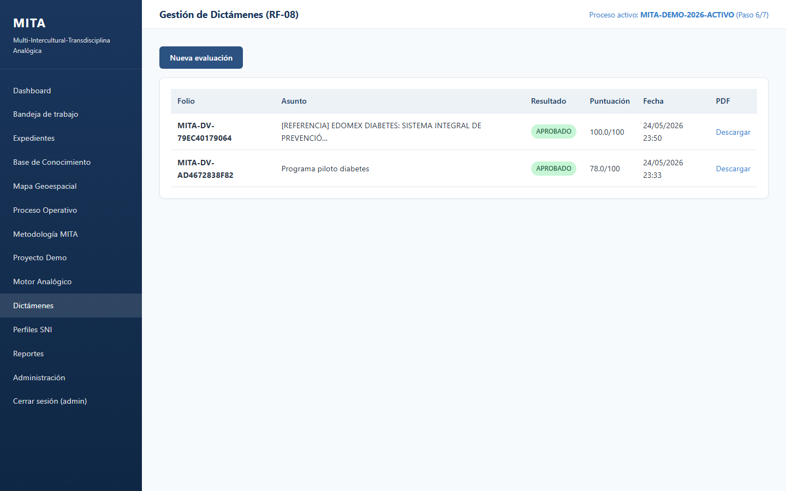
El módulo de Reportes (RF-11) muestra indicadores de impacto, metas del proyecto de referencia y lecciones aprendidas. Accesible para administrador y auditor.
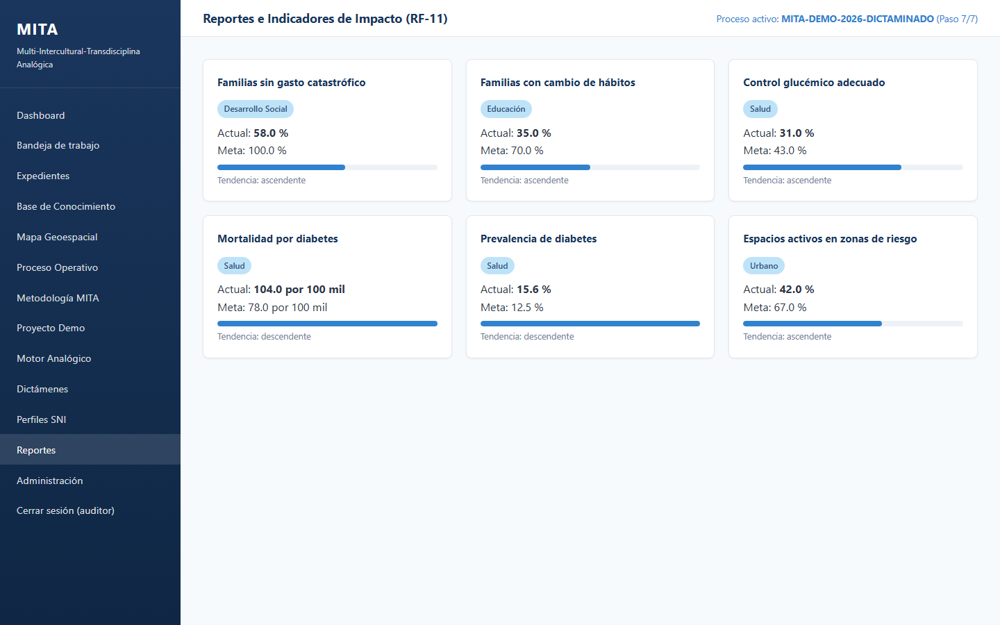
El menú es personalizado por rol. Solo el administrador ve el portal completo. El ciudadano solo ve la ventanilla; el analista no ve dictámenes ni reportes; la dependencia no ve el motor analógico, etc.
Verifique su rol: el auditor solo consulta. Los demás roles solo gestionan expedientes cuando el paso activo corresponde a su responsabilidad o cuando son creador/responsable del expediente.
Complete los campos requeridos del paso activo, pulse Guardar y luego Avanzar al siguiente paso. El sistema valida criterios mínimos (por ejemplo, al menos 2 disciplinas en el Paso 2).
En Bandeja de trabajo aparecen las tareas asignadas con enlace directo al expediente.
Inicie sesión como ciudadano, vaya a Registrar problemática,
elija el eje, complete el formulario y guarde su número de control MITA-CIU.
En el eje Salud, primero seleccione su municipio; el campo Centro de salud mostrará únicamente centros ISSEM/SEDESA de ese municipio (lista oficial, no texto libre).
Ejecute en consola del servidor: python manage.py seed_mita
Abra este archivo HTML en el navegador y use Imprimir → Guardar como PDF para generar una versión imprimible.
docs/FICHA_TECNICA_MITA.htmldocs/MAPA_FUNCIONALIDAD_MITA.html (roles, privilegios y APIs)docs/MAPA_NAVEGACION_MITA.html (árbol jerárquico del sitio)Plataforma MITA — Gobierno del Estado de México · Manual de Usuario v1.1 · Mayo 2026